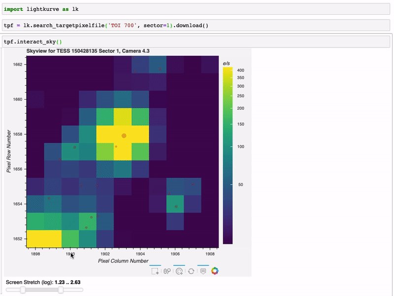
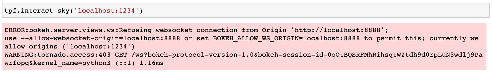

Interactively inspecting Target Pixel Files#
Learning Goals#
By the end of this tutorial, you will:
Be able to inspect target pixel files and create custom light curves using the
interact()tool.Be able to identify stars in a target pixel file using
interact_sky().Be able to interactively search for transiting planets in a light curve using
interact_bls().Understand common issues with interactive functions and how to troubleshoot them.
Introduction#
Lightkurve has three interactive tools which make it possible to perform quick inspections and analyses of target pixel files and light curves. These functions use the Bokeh library to create widgets within a Jupyter notebook. In this tutorial, we provide examples for how to best use the interactive tools in Lightkurve.
Imports#
The features demonstrated in this tutorial require only the Lightkurve package.
[1]:
%matplotlib inline
import lightkurve as lk
1. Inspecting Target Pixel Files with interact()#
Using interact should be as convenient as downloading a Kepler or TESS target pixel file (TPF) and running the method .interact(). This method can only be run in a Jupyter notebook.
.interact() offers instantaneous interactive selection of the pixel mask, and instantaneous generation of the resulting light curve. You can click on individual pixels and the aperture photometry seamlessly updates. The mask can be defined with either individual clicking of pixels, or clicking and dragging a box over a rectangular set of pixels. Deselection of individual pixels works by re-clicking a pixel that you wish to take away from your mask. Finally, you can save your mask and
light curve as a FITS file by clicking on the Save Lightcurve button.
The default mask is the Kepler or TESS “pipeline” mask, and can be modified as described above.
In this tutorial, we introduce and explain the tpf.interact() tool that accomplishes the goal of interactively inspecting the TPFs and ligh tcurve simultaneously.
Let’s first look at K2 data for the target HL Tau, a young star that possesses a gapped circumstellar disk which has been imaged by the Atacama Large Millimeter Array.
[2]:
tpf = lk.search_targetpixelfile("HL Tau", author='K2', campaign=13, cadence='long').download()
The K2 postage stamp of HL Tau contains a portion of a nearby source of comparable brightness. The weakly overlapping point spread functions (PSFs) of these sources motivate some caution in aperture choice. Let’s interactively assign a custom aperture photometry pixel mask:
tpf.interact()

You can move the large bottom left slider to change the location of the vertical red bar, which indicates which cadence is being shown in the TPF postage stamp image. The slider beneath the TPF postage stamp image controls the screen stretch, which defaults to logarithmic scaling initialized to 1% and 95% lower and upper limits respectively.
You can move your cursor over individual data points to show hover-over tooltips indicating additional information about that datum. Currently the tooltips list the cadence, time, flux, and quality flags. The tools on the right hand side of the plots enable zooming and pixel selection.
We see that the starting mask (the Kepler pipeline mask, by default), shows huge jumps in flux between times 3000 and 3020. These jagged artifacts disappear upon the selection of a larger aperture — large enough to encompass most of the point spread function of the star. The end result shows a time series light curve of a young disk-bearing star.
Interaction modes:
Clicking on a single pixel shows the time series light curve of that pixel alone.
shift-clicking on multiple pixels shows the light curve using that pixel mask. (*)shift-ctrl-clicking on an already selected pixel will deselect that pixel. (May only work on Windows systems.)Clicking and dragging a box will make a rectangular aperture mask — individual pixels can be deselected from this mask by shift-clicking (box deselecting does not work).
The screen stretch high and low limits can be changed independently by clicking and dragging each end, or simultaneously by clicking and dragging in the middle.
The cadence slider updates the postage stamp image at the position of the vertical red bar in the light curve.
Clicking on a position in the light curve automatically seeks to that cadence number.
The left and right arrows can be clicked to increment the cadence number by one.
(*)
shift-clicking does not work on Jupyter Lab as of this writing, due to conflicts between Bokeh and Jupyter Lab. Refer to the tracking issue for current status.
The interact() tool works for Kepler/K2 or TESS data. Here we show an example using Kepler data — KOI 6.01 (KIC 3248033) sits four pixels away from eclipsing binary KOI 1759.01 (KIC 3248019). An unwise choice of pixels can give rise to a spurious exoplanet signal.
[3]:
tpf = lk.search_targetpixelfile('KIC 3248033', author="Kepler", quarter=4).download()
tpf.interact()
You can see that the Kepler pointing is remarkably stable over this Kepler Quarter of 89 days. The value of interact arises from its ability to discern the spatial origin of signals. In this case, an eclipsing binary occupies the pixels towards the top of the postage stamp image. The target of interest occupies the pixels in the middle. The optimal aperture mask should avoid pixels near the top in order to mitigate an artificial planet signal.
2. Identifying Stars in Target Pixel Files with interact_sky()#
Lightkurve has an additional tool to interactively inspect target pixel files — .interact_sky. This method brings up a single frame of the target pixel file with targets identified by Gaia marked by red circles. The size of the circle scales with the magnitude of the target, where brighter sources are larger and fainter sources are smaller. Using your cursor, you can hover over the red circles to display useful information from Gaia, including its Gaia ID, G band magnitude, and coordinates.

Like .interact in section 1, .interact_sky allows you to change the screen stretch, giving you more control over the image display.

Finally, you can zoom in on different regions of the TPF by clicking the magnifying glass icon and scrolling over the image.
3. Searching for Transiting Planets in Light Curves with interact_bls()#
There is also an interactive tool for LightCurve objects called .interact_bls. BLS, or Box Least Squares, is a method for identifying transit signals in a light curve. For more information about how to use BLS to find transiting planets in Kepler/K2 or TESS light curves, please see the companion tutorial on identifying transiting planet signals in a Kepler light curve.
The .interact_bls method allows you to identify periodic transit signals in light curves by manually selecting the period and duration of the signal.

The light curve in the top right panel is phase-folded with the highest power period. When you zoom in on a region of period space in the BLS periodogram, it will automatically update the phase plot with the new period-at-max-power. Changing the duration using the slider in the bottom left will also update the BLS periodogram and phase-folded light curve. Finally, the parameters of the BLS model can be found in the bottom right panel.
4. Troubleshooting Interactive Tools#
There are a few known limitations of the interactive tools. First, they only work in a Jupyter notebook. Second, you must either run the interactive functions from the default Jupyter notebook address “localhost:8888,” or tell the function the name of the notebook server, for example:
tpf.interact(notebook_url='localhost:8893')
Otherwise, you will likely see an error message like this:

Other unexpected behaviors can occur. For example, when resetting the image views, the revised plot scaling may not display the data. Attempting to deselect with a box will cause unexpected toggling of pixels. Deselection only works with the tap tool, so box selections should use caution not to overlap with existing pixels. Surprisingly, deselection does not work for the most recently added pixel. Light curves with more than 200,000 cadences require either an increase in the max_cadences
kwarg, or slicing of your input TPF like so:
# Only show the first 1000 cadences to makes the tool faster
tpf[0:1000].interact()
# Override the maximum cadence limit
tpf.interact(max_cadences=300000)
We’d like to thank the developers of Bokeh, upon which our interactive tools rely.
About this Notebook#
Authors: Michael Gully-Santiago (igully@gmail.com), Nicholas Saunders (nksaun@hawaii.edu)
Updated: September 29, 2020
Citing Lightkurve and Astropy#
If you use lightkurve or its dependencies in your published research, please cite the authors. Click the buttons below to copy BibTeX entries to your clipboard.
[4]:
lk.show_citation_instructions()
[4]:
When using Lightkurve, we kindly request that you cite the following packages:
- lightkurve
- astropy
- astroquery — if you are using search_lightcurve() or search_targetpixelfile().
- tesscut — if you are using search_tesscut().